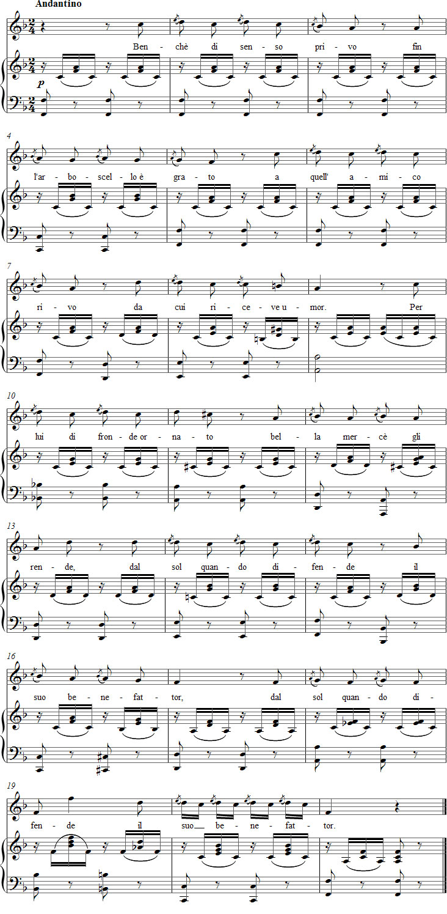

Vaccaj – Exercise 8b
Listen to the recording
Sheet music

Exercise 8b
L'acciaccatura
Short appoggiatura
to be grateful to the friendly brook,
which brings water to the tree.
With its beautiful sprigs it shelters the brook
from the sun.
Performance instructions
This exercise practises the short appoggiatura, or acciaccatura, which does not affect the duration or accentuation of its principal note. It is called an accented grace note (acciaccare means, among other things, to jostle).
Much of the charm of the preceding song depended on the long appoggiatura. In this song, the short appoggiatura emphasises the interval of a second in the melody, but with the accompaniment the composition becomes quite charming.
Practice suggestions
When all 27 acciaccaturas are removed from the melody, several long appoggiaturas remain. If these are stripped away as well, the underlying melody proves rather sparse:
sol - fa - fa - fa - fa - mi - mi
si - si - si - si - si - sol - sol
do2 - si - si - la - la - sol
si - si - si - si - si - si - si
sol - sol - sol - sol - sol - do2 - do2
do2 - si - si - si - si - si - si
la - sol - sol - fa - fa - mi
mi - mi - mi - mi - mi - mi2 - mi2
do2 - si - si - si - si - si - si - si - si - mi
Once again, it is remarkable how easily the simple repetition of notes becomes an enjoyable melody when a long appoggiatura is added.
Having travelled from the acciaccatura through the appoggiatura to the simple underlying melody, you can sing your way back along the same route.
The appoggiaturas in the preceding exercise occurred on stressed syllables. In this exercise, there are so many long and short appoggiaturas that stressing the seven-syllable verse becomes problematic. You may set aside strict prosodic ambitions with a relatively clear conscience.
You can also practise by removing all the acciaccaturas and replacing them with a vowel or syllable suitable for the Italian text. Try vowel combinations such as le – lo – le – lo – le – la – le or vi – vo – vi – vä – vi – va – vi, in which the a vowel gives greater emphasis to the first beat of the phrase.
Then add the short appoggiatura. Be careful not to accent it instead of the principal note.
Ideas for interpretation
When singing Metastasio's poem, which has been set to music in its entirety, consider the relationship between the text and the ornamented melody: the little tree tries to show its gratitude to the brook that prevents it from drying out. The gentle irony of the text may have been Vaccaj's reason for choosing it. After all, the little melody is so heavily laden with simple ornaments that it, too, has something comical about it.
The unusual word stresses in bars 14, 18 and 19, among others, can create a humorous effect.
With the appoggiatura, what should be heard is cu-u-i, lu-u-i and su-u-o – and nothing else.
Forshufvud, G. 1994. Con lieve fiato. Lärarhandledning till Nicola Vaccajs Metodo pratico. Göteborgs universitetet.